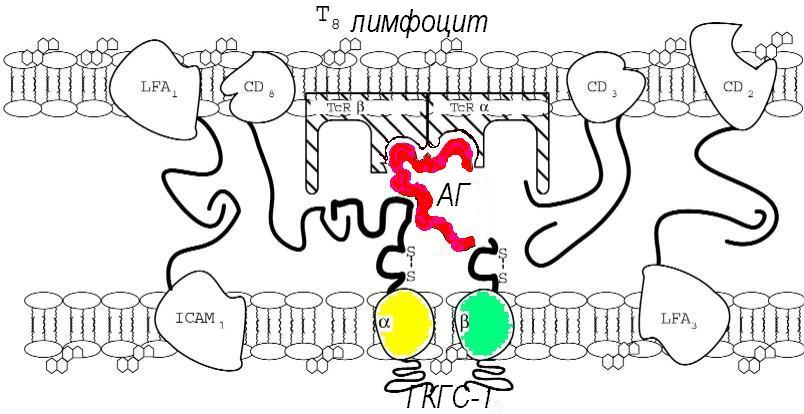
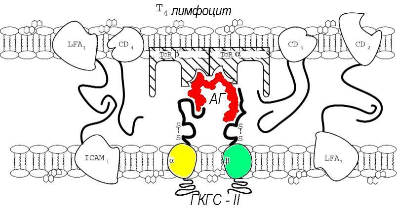
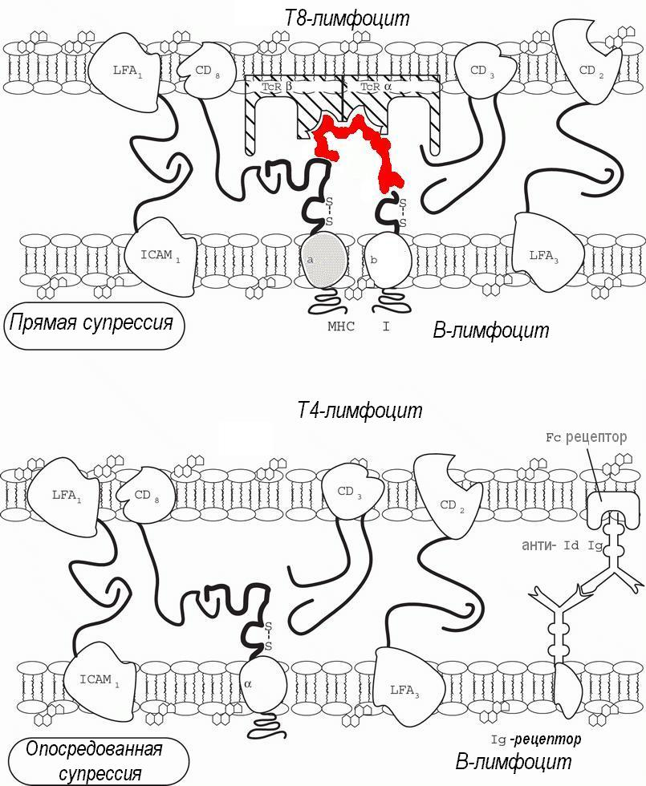
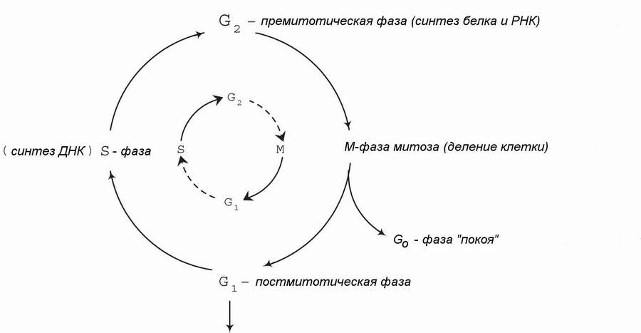
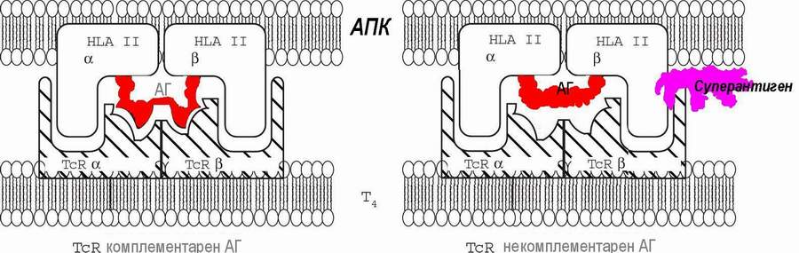

Биология Т-лимфоцитов.
Тимус-зависимые лимфоциты или Т-клетки являются основными компонентами иммунной системы. Они иммуноспецифичны и способны обеспечивать иммунологическую память и функционировать в нескольких регуляторных и эффекторных моделях. Основной предпосылкой их участия в иммунном ответе служит Т-клеточное распознавание антигена. Т-клетки клонально ограничены (рестриктированы), поскольку каждая из них содержит уникальный рецептор, способный взаимодействовать с определенным антигеном. У 95% Т-лимфоцитов Т-клеточный рецептор (TcR) состоит из a- и b- полипептидных цепей, с константными участками, расположенными ближе к поверхности клетки, и вариабельными, удаленными от поверхности клетки, которые соединяются с уникальным антигеном. Благодаря различию в структуре дистальных отделов a- и b-цепей, т.е. полиморфизму в семействе TcR, возможно развитие различных клонов Т-клеток (М. Дэвис, 1988). Механизмы генерации этого разнообразия аналогичны описанным выше для иммуноглобулинов, с той разницей, что перетасовка генетических компонентов, кодирующих различные элементы ТсR, вовлекает хромосомы 7 и 14. Целая молекула цепи рецептора имеет трансмембранный участок и цитоплазматический хвост. Последний используется для передачи сигнала внутрь клетки. В целом эта структура очень похожа на структуру связанного с клеткой Ig и, TcR, также как и молекулы 1-го и 2-го класса ГКГС, являются членами суперсемейства Ig-генов .
Недавно, была идентифицирована часть Т-клеток,.которые вместо ab- цепей в TcR имеют gd-цепи. Эти Т-клетки похожи на обычные ab-Т-клетки, но отличаются мультипликацией небольшого участка второго экзона вариабельного гена антигенного рецептора. Они составляют не более 5% Т-лимфоцитов, но концентрируются в слизистых ЖКТ и урогенитальных органов, а также эпидермисе. Истинная их роль еще не выяснена. Они могут принадлежать к более ранним стадиям внутритимусного созревания или специализироваться на обеспечении иммунных ответов в лимфоидных элементах покровов тела.
В 7-й хромосоме находятся варианты генов пептидов b- и g-цепей, а в 14-й - варианты кодов для a- и d-цепей. Эти гены также подвержены соматическому мутированию. В результате, при сборке TcR комбинируются в единый транскрипт избранные при альтернативном процессинге варианты множественных V,D,J,C-генов - для b- и g-цепей, и V и J-генов - для a- и d-цепей.


Т-клетки различаются по функциям, различны и маркеры их клеточной поверхности, как показано выше в таблице 24. В тимусе незрелые Т-клетки экспрессируют Т-клеточно-специфичные поверхностные антигены, такие как CD2. Они образуют вспомогательные молекулы, в частности, CD4 и CD8.
Когда зрелые Т-клетки покидают тимус, они являются либо CD2/CD4-положительными, либо CD2/CD8-положительными. Т-клетки развиваются в различные клоны, каждый из которых несет отличную от других молекулу TCR, специфичную к особому комплексу антигена и гликопротеида ГКГС-I или II. Т-клетки, неспособные реагировать с собственными ГКГС-гликопротеидами (бесполезные) уничтожаются (от недостаточной стимуляции). Т-клетки, комплементарно реагирующие с аутоантигенами, презентируемыми тимическими D-клетками в ассоциации с ГКГС-гликопротеидами, в основном, также уничтожаются во время созревания (от гиперстимуляции). После 3-4 недель дифференцировки в тимусе Т лимфоциты заселяют периферические органы иммунной системы. Т-клетки делятся на несколько групп, различают периферические Т-клетки-эффекторы и Т-клетки-регуляторы:
- Цитотоксические Т-клетки (Т-киллеры) распознают уникальные антигены, связанные с гликопротеидами первого класса ГКГС на поверхности любых клеток, и уничтожают такие клетки-мишени при помощи перфоринового "лизиса". Они несут CD8 - маркеры и поражают свои мишени напрямую.
- Регуляторные Т-клетки контролируют функции Т-эффекторов, Т-регуляторов и В-клеток путем различных Т-Т и Т-В взаимодействий.

Т-клеточная "помощь" (через продукцию ИЛ-2) имеет важное значение и в возникновении Т-клеточной цитотоксичности при гиперчувствительности замедленного типа.
Особой функцией лимфоцитов является предотвращение и подавление иммунного ответа - супрессия. Как прямая антиген-специфичная супрессия, так и опосредованная антиген-специфическая супрессия (рис. 87) играют значительную роль в различных фазах иммунорегуляции, периферической толерантности и сдерживании аутоиммунитета.
Классические представления о механизмах супрессии (М.Фелдмэн 1972, Н.К.Дамле, 1986) предусматривали существование специализированной субпопуляции Т-лимфоцитов-супрессоров, реализующих неспецифический, антиген-специфический и идиотип-специфический супрессорный эффекты. Современные работы отрицают существование лимфоцитов, специализированных исключительно на супрессии (А.Кук 1994). На самом деле, супрессорные эффекты распределены между Th2-хелперами, вырабатывающими иммунодепрессивные цитокины, Т8-положительными цитотоксическими лимфоцитами, использующими для иммуносупрессии незавершенный киллерный эффект (прямая супрессия), и В-клетками - продуцентами антиидиотипических антител - опосредованная идиотипспецифическая супрессия.
Показано, что малые дозы антиидиотипов способны стимулировать антигенспецифический иммунный ответ, в отсутствие антигена активируя клетки памяти, в то же время большие дозы антиидиотипов подавляют антигенспецифическую иммунопродукцию (К.Раевски, А.Такемори, 1983, А.Я.Кульберг 1986). Супрессорное действие Т8-лифоцитов возможно путем секреции свободных Т-клеточных рецепторов. В ответ на комплементарный антиген и на некоторые митогены происходит универсальный процесс - активация Т-клеток.

Недавно был описан новый класс посредников активации ответа Т-клеток - "суперантигены". Прежде всего следует сказать, что суперантиген - не антиген, по крайней мере, в суперантигенности нет черт антигенности. Суперантигеном поспешили назвать обнаруженное в начале 90 годов явление поликлональной активации продукции цитокинов, сопровождающееся системными реакциями. Так называемый суперантиген - это, как правило, продукты микробов, а также некоторые пищевые продукты и лекарственные препараты, способные стимулировать субпопуляции Т-клеток, несущие определенный подвариант TcR. Суперантигенность - относительное свойство: одни и те же вещества могут быть суперантигенными для одних индивидов, и не проявлять этих свойств в отношении других. Непременным атрибутом суперантигенности является одновременная комплементарность одного участка суперантигена уникальному варианту TcR-рецептора Т-лимфоцитов, а другого - соответствующему варианту ГКГС-II гликопротеида (Г.М.Джонсон и соавт., 1992).

Особенно важно, что при активации с помощью суперантигена T-хелперов В-лимфоцитами, которые также могут выступать в качестве АПК, может происходить параллельно и активация самих В-лимфоцитов. В случае активации аутореактивных В-лимфоцитов происходит срыв аутотолерантности и возможны аутоиммунные заболевания. Разнообразие суперантигенов включает ЛПС Грам-отрицательных бактерий, токсин энтеропатогенного стафилококка Е и токсин синдрома стафилококкового токсического шока, вирус Эпштейна-Барр и даже компоненты плодов киви. Суперантигены играют значительную роль в этиологии и патогенезе многих аллергоидных реакций (см. ниже), в частности, при токсической диспепсии у детей и пищевых токсикоинфекциях взрослых.
|
|
|
|
|
|